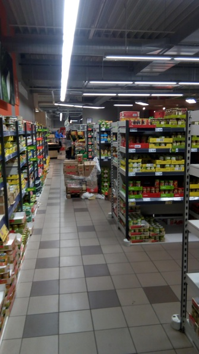
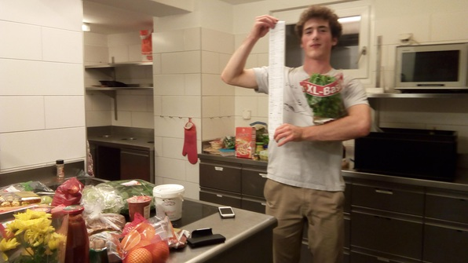

Had a cool Machine Learning class in the morning where we talked about the tradeoff between the bias of an estimator (its systematic prediction error) and the variance (how wide a spread of estimators you get from training the estimators on different training samples).
For lunch, met Michael, from frisbee with Abhi, who’d invited me to participate in a challenge race, and the rest of the team he’d recruited. Was pretty fun, met a smooth-talking CS dude named Cameron.
Machine learning exercise was not too interesting! Forward to:
Groceries in Germany
Betty had invited me to go grocery shopping in Germany in the evening using our Gleis 7 (free after 7) travelcards. We left at 7:09 from Zurich HB, took about an hour’s worth of trains to (some town on the German border whose name I don’t remember) and disembarked to a grocery store. We went nuts.

On the way back we didn’t have WiFi to find a train we could take (for free, with our Gleis 7) so we hit up a Burger King, carrying our approximately 100 pounds of groceries:
The aftermath:

What a trip! Very fun and hectic way to set yourself up with groceries for the (week/fortnight).